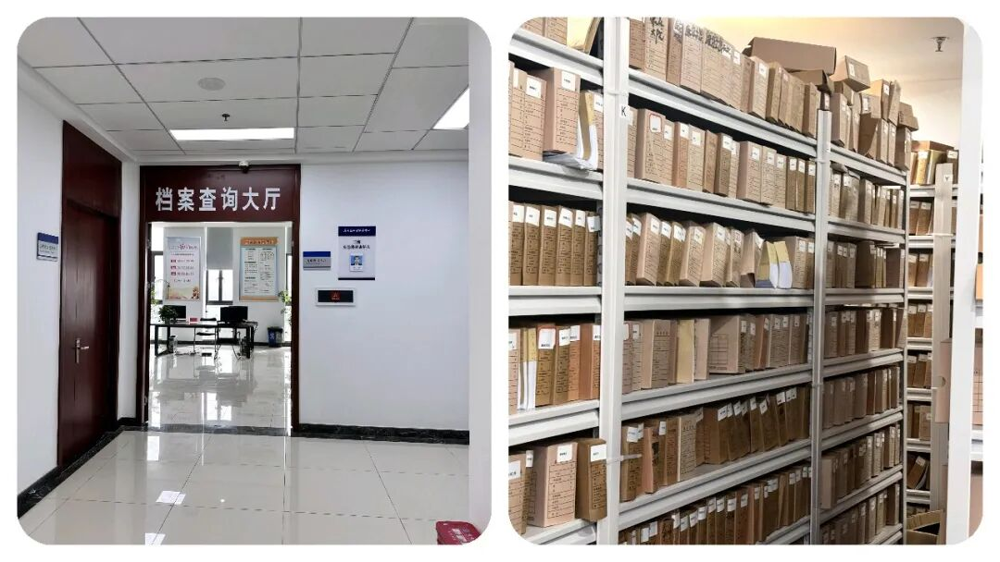
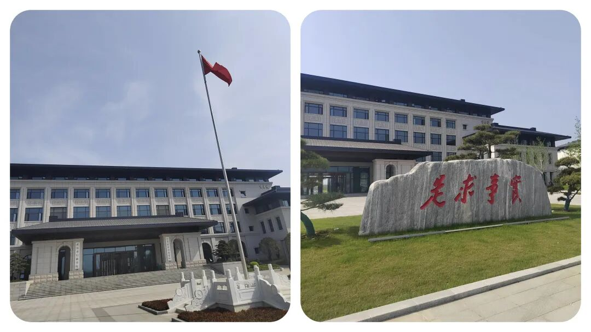
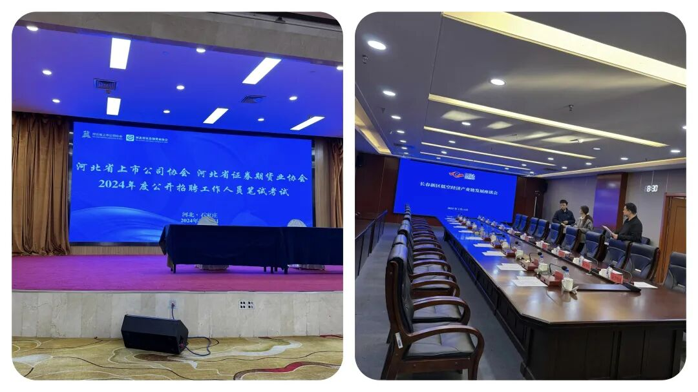
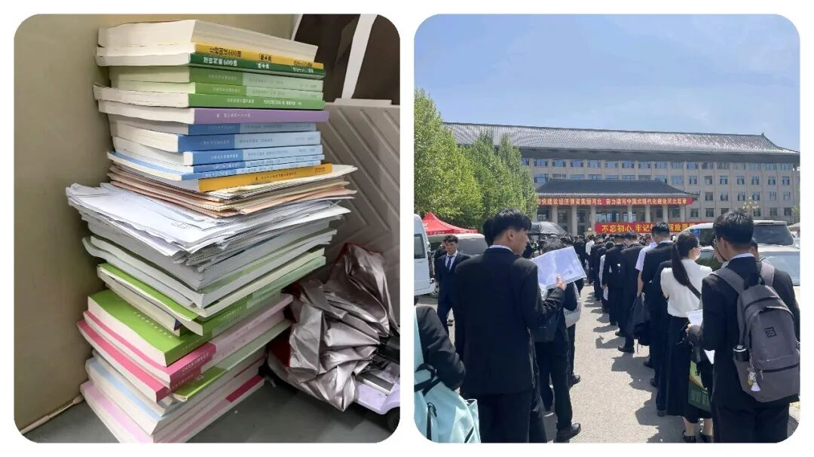

你注意到没？为什么现在的年轻人，都不愿报考“老牌”体制单位了！
原创
点击关注👉🏻
点击关注👉🏻
田间烟火
在小说阅读器读本章
去阅读
在小说阅读器中沉浸阅读
点击上方
蓝字
关注我们
田间烟火🔥
大家好，我是田间烟火🔥～
这几年，体制内岗位在不少人眼里还是稳，但
稳
和
有发展
，往往不是一回事。
真要细看就会发现，有些单位牌子还在，编制也还在，但是呢，手里的
事、钱、权
，已经和过去不是一个量级了。
岗位看着安静，实际也可能意味着
边缘化
，
这事该不该提前看明白？
先把话说直白点，这类单位有个共同点，
名字不算陌生，听着也挺正规，可实权缩水，业务被分流，资源拿不到
，慢慢就成了清水岗。
你进去了，也不一定会吃亏，但想靠它打开局面、跑出上升线，难度确实不小。
01
文旅局
文旅局就是一个典型。
以前提到地方文旅，不少人会觉得这是个有想象空间的口子，
景区、活动、项目
，看着都热闹。
可现在不少地方的文旅开发，真正拍板和推进的，往往是
城投平台、国企或者专门的项目
公司，局里更多是在做
统筹、宣传、材料
、协调
。
问题就在这儿，表面上是参与了，关键资源却不一定在手里，项目落地时能说了算的环节少了，
年轻人自然会掂量，这地方到底值不值得冲？
而且文旅这条线还有个明显变化，很多地方都在追求
文旅和商业、基建、夜经济打包推进
，谁掌握资金和建设主体，谁的话语权就更大。
局里如果只是做
活动方案、报送总结、接待检查，日常忙归
忙，含金量却不一定高。
像一些热门旅游城市，文旅部门因为景区密集、活动频繁，存在感仍然不低，可这种情况并不普遍，普通地区差别挺大。
02
供销社
供销社更容易看懂。
它曾经有过自己的时代，但零售格局变了，
超市、便利店、电商、社区团购
都起来了，过去那种进货卖货的独特位置，早就松动了。
很多基层供销社现在是什么状态？
门店空着，或者干脆租出去，挂着牌子，真正能做的主营业务不多。
单位还在，人也在，可工作内容越来越薄，发展空间自然跟着收缩。
当然，供销社也不是所有地方都一个样。
前些年有些地区把供销体系重新
接回农资、冷链、农产品上行
，和乡村流通结合得比较紧，业务量反而比想象中活跃。
可这更看地方基础和资源整合能力，不能简单拿个别样本当普遍趋势。
大多数普通基层岗位，还是很难回到当年那种位置。
03
档案馆
档案馆，冷门属性就更明显了。
整理档案、修志编史，这些工作当然有价值，而且价值不小，只是它更偏长期、偏基础，也更难在日常行政运转里形成强存在感。
说白了，事情不能说不重要，但离核心事务远，离决策链条也远。
没有项目牵引，没有审批权，没有资源调配空间，岗位就容易变成安稳有余、活力不足。
有人会问，安静一点不好吗？
有的人说是“养老岗位”😁
这要看你图什么。
你要的是
规律、稳定、少折腾
，那确实适合。
可如果你想多接触综合业务、扩大人脉、争取晋升，这种单位的通道通常就窄。
很多人进去后，很快会发现，日常不算太累，但成长速度也慢，熬年头未必换来位置变化。

04
基层党校分校
基层党校分校这几年也在经历类似变化。
过去线下集中培训多，党校的地位比较直观。
后来培训形式变了，
行政学院、网络课程、联合办班都在分流
，基层单位的大班次减少，师资稳定性也在下降。
课程照样上，牌子照样挂，可培训密度、影响范围、资源吸附能力，和以前比有差距，这种变化大家都看得到。
这里还有个细节值得注意，单位一旦业务减少，
最先受影响的往往不是日常运转，而是新人吸引力。
为什么有些地方的基层党校招人难，留老师也难？
因为年轻人会比较，同样在体制内，一个岗位能不能接触核心事务，能不能形成专业积累，差别很大。

你总不能只看清闲，不看三五年后的路径吧？
05
行业协会
行业协会也差不多。
以前一些挂靠体制内的协会，能做审批相关事务，能搞评优评级，还有一定行业组织力。
现在不少权限
收回去了，收费、摊派
这些灰色空间也被压缩，协会日常更多成了
发通知、做统计、办活动。
企业如果觉得没实际帮助，配合度也会下降。
没有抓手，没有硬权限，协会就容易变成存在但不强势的组织。

06
报考体制内不能只看“上岸”
这类变化，不只是某个单位衰落的问题，更像是整个行政分工在调整。
哪些职能被市场接走了，哪些被平台公司接走了，哪些被更高层级、数字系统、专业机构接走了，结果就是，
一些老牌单位还在运转，可已经不再是资源入口。
我们应该考虑的是，
不只是名字好不好听，而是岗位有没有抓手，有没有成长场景，有没有持续积累的空间。
说到底，报考体制内，不能只看上岸两个字。
你考进去以后，十年怎么走，五年能不能动，平时接触什么事，这些都要提前算。
热门核心部门当然竞争更大，但至少路径更清楚。
冷门边缘单位未必不能去，可你得接受它的现实，别抱着旧印象做判断。

07
在岗也不必灰心
已经在岗的人，也别急着灰心。
路不是没有，关键是别长期原地不动。
能争取借调就争取借调，反正就是能调走就尽量调走，能参加轮岗就别错过，能补业务能力就尽快补，尤其是写材料、项目协调、数据分析这类通用能力，放到很多口子都能接得上
。
江苏一些基层干部这几年通过借调到专班、巡察组、重点项目组，后续岗位变化就比长期守着原单位的人快得多，这就是现实差距。
还有人会说，清水岗至少稳，为什么要折腾？
这话也没错。
问题不在于稳不稳，而在于你自己想要什么。
想图稳定，就接受它的上升慢。
想要发展，就别把边缘岗当成终点。
单位的冷热会变，个人的选择也该跟着变，这才更实际。
进体制圈后才懂的体制内真相，你还悟到了哪些？
评论区一起交流～
点点赞，你最好看～